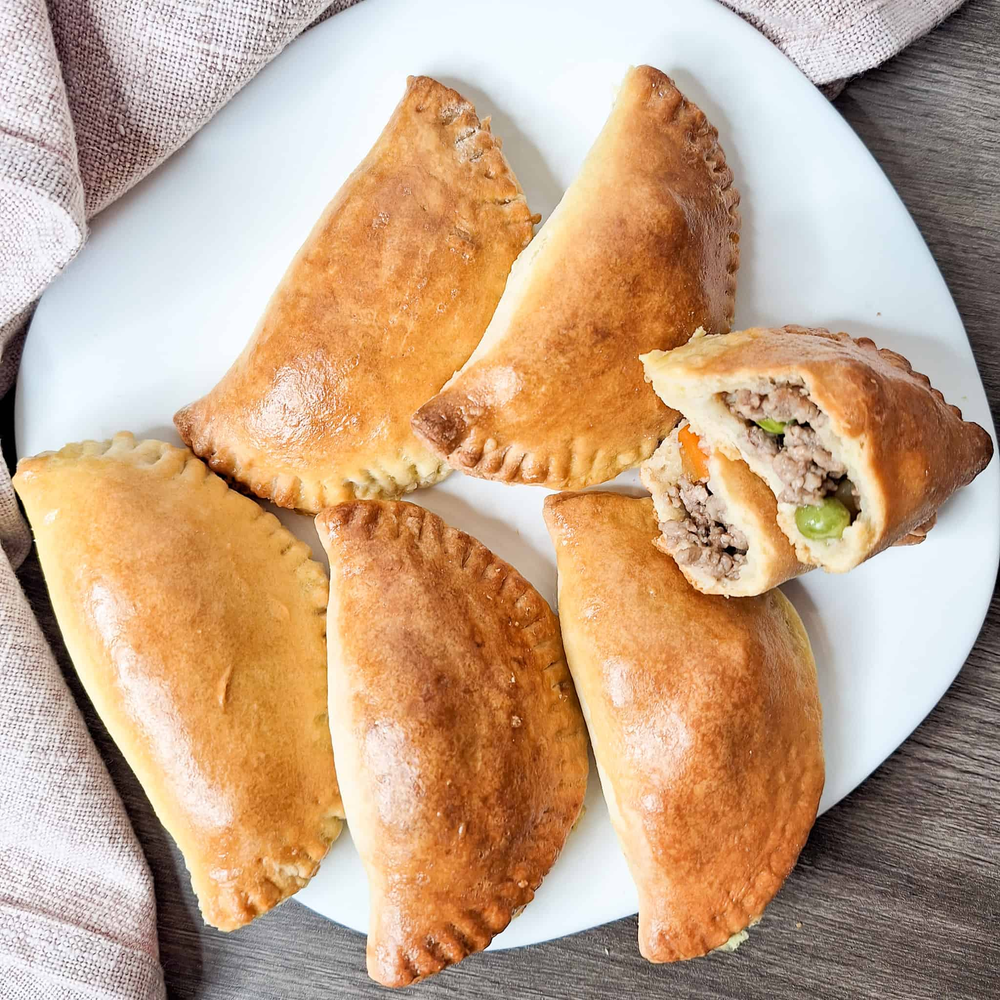

The Mangaldan Empanada is a savory Filipino street food originating from the municipality of Mangaldan in Pangasinan, Philippines. It is a local version of the empanada, known for its distinctive orange-hued rice flour shell and flavorful filling that reflects Pangasinan’s regional tastes.
Fun Facts
- It’s often compared to Ilocos empanada, but Mangaldan’s version is smaller and sweeter
- Best eaten hot and freshly fried
- Usually sold in roadside stalls
Composition and Flavor
The Mangaldan Empanada uses a rice flour dough colored orange by annatto oil. Its filling commonly includes shredded green papaya, sautéed mung beans, and the local pork sausage known as longganisa, often wrapped with a raw egg before frying. The result is a crisp outer shell enclosing a savory, slightly sweet-salty interior.
Cultural Significance
Empanadas in Pangasinan, especially Mangaldan, are not merely snacks but part of the town’s culinary identity. Vendors often prepare them fresh in roadside stalls, particularly during town fiestas and markets. Locals consider it both an affordable comfort food and a source of regional pride.
Comparison with Other Empanadas

While sharing roots with the more widely known Vigan empanada of northern Luzon, the Mangaldan variant differs in seasoning and filling proportions. Its taste is typically milder and less garlicky, and its dough thinner, reflecting the Pangasinan palate’s preference for balance over spice intensity.
Vendors in Mangaldan are known to prepare empanadas in front of customers. Watching them crack an egg into the filling and fry it perfectly has become part of the experience—it’s not just food, it’s a live cooking show.